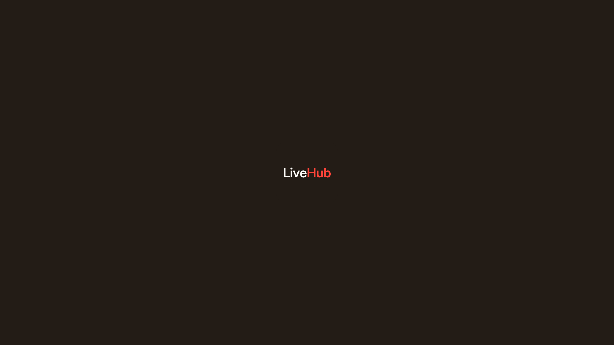
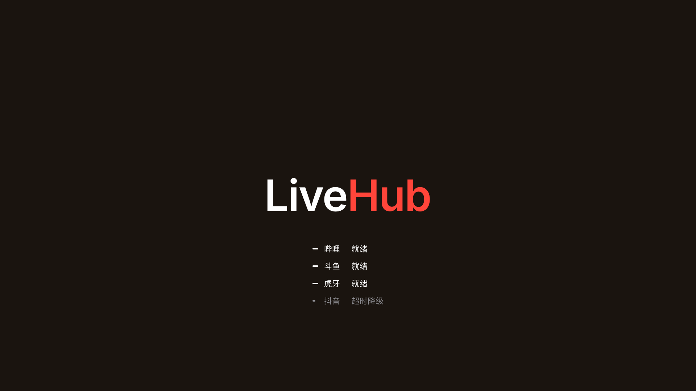
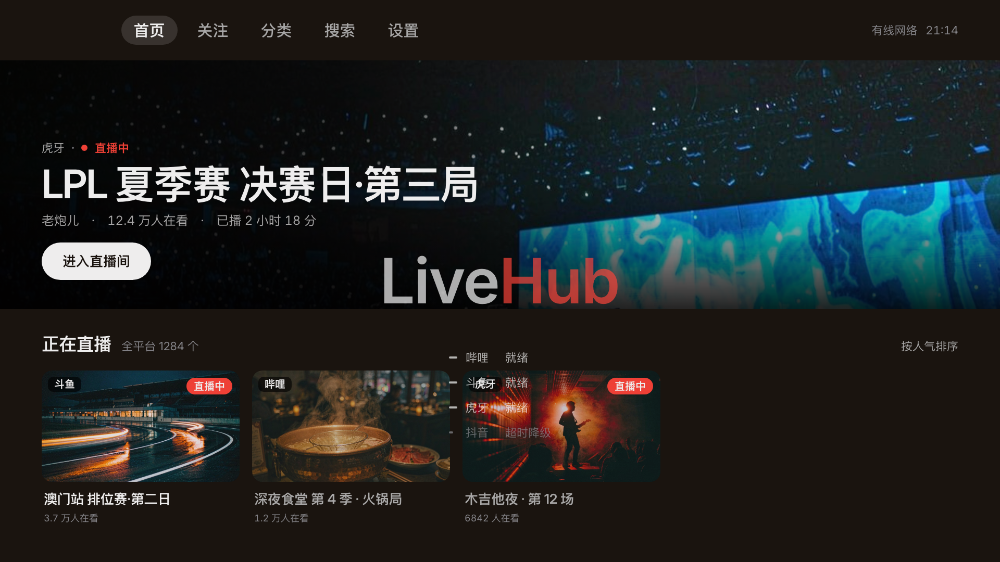

这一页画的就是打包成 APK 装到设备上、系统拿去当桌面图标的那个东西：清单里 android:icon="@mipmap/ic_launcher" 指向的资源。图形沿用 v2 字标板（Live 白 / Hub 红，底 #231C16），矢量唯一源 brand/wordmark/src/square.svg（512 画布，7 条 path，轮廓取自 Inter wght=600·opsz=32）。本页只出现四色：#231C16 #1A140F #FFFDFA #FF453A。
图标不画播放三角、不画遥控器、不画信号格 —— 它只放 LiveHub 这七个字母。能被认出来的理由不是符号，是配色：深褐底上「Live」白、「Hub」红，红是全项目唯一的那一次使用。所以同一份图形既能当 512 的圆角方图，也能整块塞进自适应图标的 72 安全区，不需要再设计第二版。
下面这两个数是一切的起点：108 是交给系统的整层，72 是它保证露出来的部分。差的那 18 dp 每边是留给系统动画的 bleed，不是画布外扩。
| 矢量源画布 | 512 × 512，圆角 r 79.36（15.5%） |
| 字标常数 | cap 0.727539em · advance 3.63em · 墨宽 3.539061em |
| 画布占比 | advance = 0.786 × 画布宽（唯一口径：advance 框居中） |
| 交付档位 | mipmap 五档 48 / 72 / 96 / 144 / 192 |
LH、96 起才是完整 LiveHub —— 这不是疏漏，是下一节之后要算的阈值。
系统只认三样东西：一块纯色底、一层前景、一张单色剪影。前景和剪影都是 108 viewport，字标被整体映射进中间 72×72 —— 因为 launcher 会拿任意 mask 去裁，只有这块区域是「不管哪种 mask 都还在」。
@color/ic_launcher_background = #231C16drawable/ic_launcher_foreground.xmlsquare.svg 逐字节相同，只换外层变换：translate(25.704 59.671) scale(0.00761234)。红虚线是墨迹框 55.18 × 11.34，最外点 r 28.16。72 / 512 = 0.14062518 dp（每边）25.704 59.6710.00761234advance 56.59 · cap 11.34(26.41, 48.33) – (81.59, 59.67)59.67映射只有这一步。没有重新设计、没有重排字距、没有为小尺寸调过 cap 差 —— 前景就是 square.svg 原样缩进 72。
| 层 | 文件 | viewport | 内容 |
|---|---|---|---|
| background | values/ic_launcher_colors.xml | — | 单文件单键，只有一个颜色，没有第二处可改 |
| foreground | drawable/ic_launcher_foreground.xml | 108 × 108 dp | 7 条 path，白 4 红 3 |
| monochrome | drawable/ic_launcher_monochrome.xml | 108 × 108 dp | 同一套 path，两个 fill 都 #FFFFFF |
不同 launcher、不同 OEM 用不同 mask。判据只有一条：字标最外那个点离中心多远。实测 rmax = √(27.59² + 5.67²) = 28.16；72 方框的内切圆半径 36，余 7.84；更保守的 66 圆（r 33）也还余 4.84。所以四种裁法下字标一个像素都不会被切。
第五把：水滴 · teardrop
它的切口落在某一个角上，而不是四条边的中段。而字标的四个角都在 x ∈ [26.41, 81.59]、y ∈ [48.33, 59.67] 这条横带里，离 108 的任何一个角都在 40 dp 以上 —— 切口够不到字。结论与上面四把一致，不另画。
反过来也能说：只要字标留在 72 方框内，换什么 mask 都不用再验一遍。这就是 18 dp bleed 的全部意义。
图标基准 48 dp，五档就是 1× / 1.5× / 2× / 3× / 4×。下表的 md5 是逐个 md5 -q 出来的，用来证明 res/ 里的文件确实等于 design/brand/wordmark/export/ 里的那一张 —— 文件名不算证据，字节才算。
| 档位 | 像素 | launcher 尺寸 | 构成 | md5 | 源 |
|---|---|---|---|---|---|
| mipmap-mdpi | 48 | 48 dp @1× | LH | 39444811…f45e | square-48-B.png |
| mipmap-hdpi | 72 | 48 dp @1.5× | LH | b12264b9…6ba99 | square-72.png |
| mipmap-xhdpi | 96 | 48 dp @2× | 完整 LiveHub | fbd35b58…6c6f27 | square-96.png |
| mipmap-xxhdpi | 144 | 48 dp @3× | 完整 LiveHub | f1e0175b…d57282 | square-144.png |
| mipmap-xxxhdpi | 192 | 48 dp @4× | 完整 LiveHub | 9f5d88f8…24b7 | square-192.png |
LH · 竖干 3.1px48 这一档只有一条出路：换字。完整字标在 48 画布上字号 10.39、cap 7.56、竖干 1.28 px —— 光栅化之后笔画只有 1.34 px 且半透明，在电视的桌面栅格里就是一坨灰。所以 48 与 72 交付的是 LH：字号 23.91、竖干 2.95 px，实心笔画 3.1 px，覆盖率 100%。
切换不是按档位清单拍的，是按竖干阈值：完整字标要竖干 ≥ 2 px 需画布 ≥ 75.1；LH 只需 ≥ 31.1。所以阈值落在 72 与 96 之间 —— 相邻两档是两种构成，是规则的结果，不是 bug。
已知分歧，记在这里不改资产：这张表是 PNG 路径（API < 26 的 launcher、或不吃自适应图标的主机）。走 ② 那条矢量路径时，前景只有一份、恒为完整字标 —— 在 48 dp 的图标里它落到 advance 37.7 px、竖干 1.28 px，也就是低于上面那条阈值。两条路径在小尺寸上的观感不同是既成事实；真要统一，得给 foreground 也做一套 -v26 的 LH 版本，那是资产改动，不在 v1.0.0 的冻结范围内。
产物在哪：这六张就在 android/app/src/main/res/（清单里 android:icon="@mipmap/ic_launcher" 直接取用），② 那三个 XML 同在 res/ 下。怎么重建：node design/brand/build-icons.mjs --check 在内存里按设计矢量光栅化、逐档比 md5，不写任何文件；去掉 --check 就跑同一套光栅化并写进 design/brand/wordmark/export/；再由 node android/tools/sync-icons.mjs --write 同步进 res/（只管 5 档 mipmap，banner 例外，见 design/brand/README.md）。最近一次核对用的是 PIL 逐像素比对、不是 md5：48 / 72 / 96 三档与现有交付完全相同（三通道最大差 0），144 差一条 144×9 的带、最大 24/255，192 最大 1/255，都落在曲线边缘、肉眼不可见，所以这一版 res 没有被覆盖；banner 不参与这个比对 —— export/banner-320.png 是带 alpha 的圆角交付档，res/tv_banner.png 是满版 bleed、圆角由 TV launcher 裁，两者不是同一张图。
API 33 起，mipmap-anydpi-v33/ic_launcher.xml 比 v26 多一行 <monochrome>。系统开「主题化图标」时不用彩色前景，而是拿这张剪影染成壁纸的色系。没有这一段，v33 目录与 v26 内容完全相同 —— 那个目录就没有存在理由，所以这一段必须真存在。
文件里两个 fill 都写成 #FFFFFF 而不是留空：颜色本来会被系统丢弃，写死一个不透明白，是为了让「这里只有一个颜色」这件事在文件里也是真的。形状与前景逐字节相同，只改了两个 fill。
图标底 #231C16 同时是系统开屏的 windowBackground，所以点开图标那一瞬没有跳变，图标板像是从桌面里化开；随后整屏落到应用底 #1A140F，只落一次。
#231C16 · L* 10.89#1A140F · L* 6.81ΔL* = 4.076，全链只此一次。同一帧里不再出现第二条这样的边 —— 所以开屏没有卡片。



左：系统帧（?sys=1）—— 底就是图标底 #231C16，所以那块圆角板看不见边，屏上只剩字；中：应用开屏定稿帧（?still=1）—— 底换成 #1A140F，ΔL* 4.076 在这一跳里落完；右：?state=ready&t=1060，字标压在首页层上交叉淡化，整屏底色一次没变。三张同出 design/v1.0.0/splash.html，1920×1080 原生光栅化，不是缩图。
清单里同时写着 android:banner="@drawable/tv_banner"。Leanback 桌面的栅格优先用 16:9 的 banner（图标只出现在应用列表、系统设置、手机/盒子的普通桌面）。所以两个资产各管一段，不重叠、不互相替代。
每档都在自己的坐标系里重新光栅化（同一份矢量，viewBox 恒 320×180，只改 width/height），小档不是大档的降采样。圆角 r = 0.155H = 27.9。
| 档 | 画布 | r | 字号 | cap | baseline | advance | 墨宽 | 左右留白 |
|---|---|---|---|---|---|---|---|---|
| square（源） | 512 | 79.36 | 110.863 | 80.66 | 296.33 | 402.43 | 392.35 | 54.78 |
| sq192 | 192 | 29.76 | 41.574 | 30.25 | 111.12 | 150.91 | 147.13 | 20.54 |
| sq144 | 144 | 22.32 | 31.18 | 22.68 | 83.34 | 113.18 | 110.35 | 15.41 |
| sq96 | 96 | 14.88 | 20.787 | 15.12 | 55.56 | 75.46 | 73.57 | 10.27 |
| sq72 | 72 | 11.16 | 35.866 | 26.09 | 49.05 | 44.64 | 40.31 | 13.68 |
| sq48 B（交付） | 48 | 7.44 | 23.91 | 17.4 | 32.7 | 29.76 | 26.87 | 9.12 |
| sq48 A（留痕） | 48 | 7.44 | 10.393 | 7.56 | 27.78 | 37.73 | 36.78 | 5.14 |
| foreground @108 dp | 72 安全区 | — | 15.59 | 11.34 | 59.67 | 56.59 | 55.17 | 8.41 |
字标常数：cap 0.727539em ｜ advance 3.63em ｜ 墨宽 3.539061em ｜ 墨宽÷cap 4.8644。居中口径 = advance 框居中（唯一口径）。
| 令牌 | 值 | 用在哪 |
|---|---|---|
| 图标底 | #231C16 | background 层 / square PNG / banner / 系统开屏 windowBackground |
| 应用底 | #1A140F | 开屏整屏、应用内底 |
| Live | #FFFDFA | 字标前半（白） |
| Hub | #FF453A | 字标后半（红，全项目唯一） |